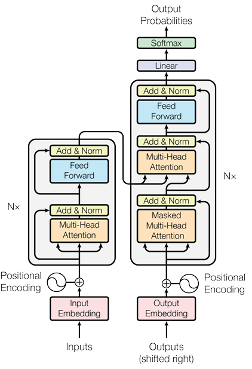

Vision Transformer学习笔记
Vision Transformer
1 目的与来源
本科学习期间，参加了一些机器人比赛，主要负责的视觉部分。在比赛结束后，我继续沿着视觉方向，学习了Vision Transformer(ViT)，只看论文总有些隔靴搔痒，不得精髓。于是就有了这篇学习笔记。代码来源于vit-pytorch。下面将先分析ViT的总体思路，再深入代码进行学习。Transformer论文,ViT论文
2 网络设计思路
ViT的思路来源于Transformer架构，Transformer由2017年Google团队提出，该文原本为自然语言处理领域的成果，后来在深度学习的众多领域都表现出了卓越的能力，如今的火热的大语言模型(如GPT等)基本均以其为基础。
Transformer原本的结构分为encoder(下图左侧)与decoder(下图右侧)两个部分，而ViT将其迁移至视觉领域，仅保留了encoder部分，删除了decoder，结构其实是简单了很多。可以看到encoder主要由Input Embedding(词嵌入)，Positional Encoding(位置嵌入)，Multi-Head Attention(多头注意力模型)，Add & Norm(残差相加与归一化)，Feed Forward(前馈层)构成。decoder部分相较于encoder仅仅是多了Masker Multi-Head Attention(带掩膜的多头注意力模块)和末尾的Linear与Softmax。这些模块在后续的代码分析中都会详细讲解。 
原本的Transformer处理的文本是序列化的信息(文字存在前后顺序且不可随意变动)，而且将文字嵌入为词向量(将文本编码为网络可处理的向量，一般为一维向量)。如果将一张224x224大小的图像存储在一个一维向量中，这个向量的维度会过于庞大，网络难以处理，所以作者首先将一张图像切成很多的patch，每个patch很小，一般为16x16。例如一张224x224的图像就可以分割为196个16x16的patch。将每个patch拉伸为一个向量，网络是完全可以处理的。在上述例子中，我们就可以得到196个序列向量，再为每个向量添加位置嵌入(告诉网络每个patch的相对位置关系)，送入到ViT中即可。由于ViT被提出时是用于图像分类任务，所以作者在Transfomer encoder的末尾处添加了线性层用于最后的分类任务。 ## 3 代码分析
代码由4个类和1个函数构成，4个类层层嵌套，实现全过程：class ViT, class Transformer, class Attention, class FeedForward.
一个函数为pair(t)，用于判断参数t是否为元组，是，则不变；否则返回(t, t)。下面从最外层类开始逐渐深入分析。
ViT类
1 | |
首先在init函数中进行相关的参数初始化。image_size是输入图像大小，patch_size是每个patch的大小，num_classes为分类的种类数，dim参数是一个将patch的维度进行线性映射后的维度。depth是多少个注意力块与前馈网络，heads为被切成大块的q,k,v再被分为多少个小块(头)，mlp_dim是前馈网络中的中间隐藏层维度，pool为程序最后的池化方式（只接受cls与mean两种方式），channels输入图像的通道数，dim_head每个头的维度（与heads配套使用），dropout是transformer块中的参数（同时用在了Attention和FeedForward里），emb_dropout，embedding结束后dropout的参数，dropout主要用于减轻网络过拟合问题。上述参数没有理解也没有关系，后续还会多次出现。
1
2num_patches=(image_height// patch_height)*(image_width//,patch_width)
patch_dim= channels*patch_height* patch_width
1 | |
首先将输入图像送入to_patch_embedding，to_patch_embedding定义如下：
1
2
3
4
5
6self.to_patch_embedding= nn.Sequential(
Rearrange('b c (h p1) (w p2) -> b (h w) (p1 p2 c)', p1 = patch_height, p2=patch_width),
nn.LayerNorm(patch_dim),
nn.Linear(patch_dim, dim),
nn.LayerNorm(dim),
)1
2
3
4
5b, n, _ = x.shape
cls_tokens= repeat(self.cls_token,'1 1 d -> b 1 d', b=b)
x= torch.cat((cls_tokens, x), dim= 1 )
x+= self.pos_embedding[:, :(n+ 1 )]
x= self.dropout(x)self.cls_token = nn.Parameter(torch.randn(1,1, dim))，说明self.cls_token就是一个可训练的随机张量。repeat函数将这个张量重复b次，形成了[batch_size,
1, dim]的张量。紧接着，使用cat函数在第
1个维度（num_patches）进行了拼接，形成了[batch_size, num_patches+1,
dim]的张量。cls_token原本是代表最终类别的标签，但在实践中发现cls_token可以被每个类的概率直接替代。所以目前我认为，这个参数可有可无.....
第四行进入到位置嵌入，定义了self.pos_embedding = nn.Parameter(torch.randn(1,num_patches + 1, dim))，它初始化了一个和添加了cls_token后张量的后两个维度相同的位置嵌入，按照Transformer论文，应当是正余弦方式进行嵌入，即
\[
PE(pos,2i)=\sin(\frac{pos}{10000^{\frac{2i}{d_{model}}}})
\] \[
PE(pos,2i+1)=\cos(\frac{pos}{10000^{\frac{2i}{d_{model}}}})
\]
但这里的初始化，将其设计成了可以训练的参数，与原文不太一样，我们认为网络可以通过参数学习到每个patch之间的相对位置关系。总之，这里将位置嵌入加上来。随后紧接着dropout，这里使用的是emb_dropout，防止过拟合。下面进入到transformer类中，注意，此时的张量形状为[batch_size,
patch_num+1, dim]，这是一个贯穿ViT模型始终的重要张量形状。 1
x = self.transformer(x)
Transformer类
Transfomer类的前向传播： 1
2
3
4for attn, ff in self.layers:
x= attn(x)+ x
x= ff(x)+x
return self.norm(x)1
2
3
4
5for _ in range(depth):
self.layers.append(nn.ModuleList([
Attention(dim, heads= heads, dim_head =dim_head,dropout= dropout),
FeedForward(dim, mlp_dim, dropout= dropout)
]))
Attention类
这是Transformer最核心最重要的部分。我们一步一步分析Attention块的前向传播：
1
2
3x= self.norm(x)
qkv=self.to_qkv(x).chunk( 3 , dim =- 1 )
q, k, v=map(lambda t: rearrange(t,'b n (h d) -> b h n d', h=self.heads), qkv)1
2
3
4
5dots=torch.matmul(q, k.transpose(- 1 , - 2 )) *self.scale
attn=self.attend(dots)
attn=self.dropout(attn)
out=torch.matmul(attn, v)
out=rearrange(out, 'b h n d -> b n (h d)')
具体而言，这一部分的计算公式为： \[
Attention(q, k, v)=softmax(\frac{qk^T}{\sqrt{dim\_head}})v
\]
本质是计算了加权后的v，加权的本质是考虑了序列前后之间的关系，\(qk^T\)正是计算了序列前后的关联性。
1
return self.to_out(out)
FeedForward
代码很简单，就只是经过以下一个序列： 1
2
3
4
5
6
7
8self.net=nn.Sequential(
nn.LayerNorm(dim),
nn.Linear(dim, hidden_dim),
nn.GELU(),
nn.Dropout(dropout),
nn.Linear(hidden_dim, dim),
nn.Dropout(dropout)
)
回到ViT
这里，结束了x = self.transformer(x)，继续ViT类中的forward函数。
1
2
3 x= x.mean(dim= 1 ) if self.pool== 'mean' else x[:, 0 ]
x= self.to_latent(x)
return self.mlp_head(x)